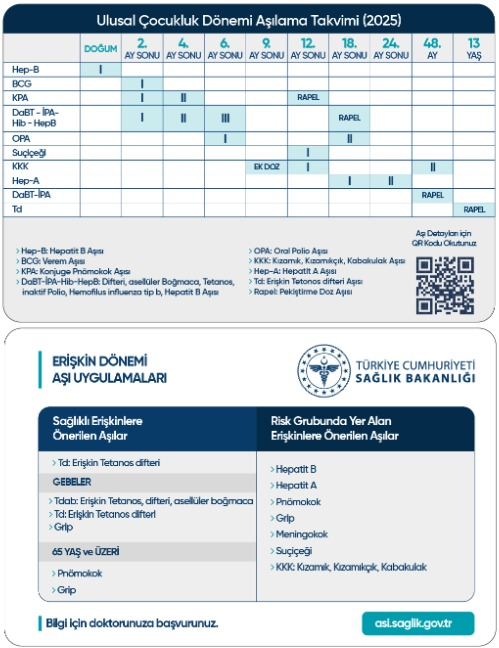
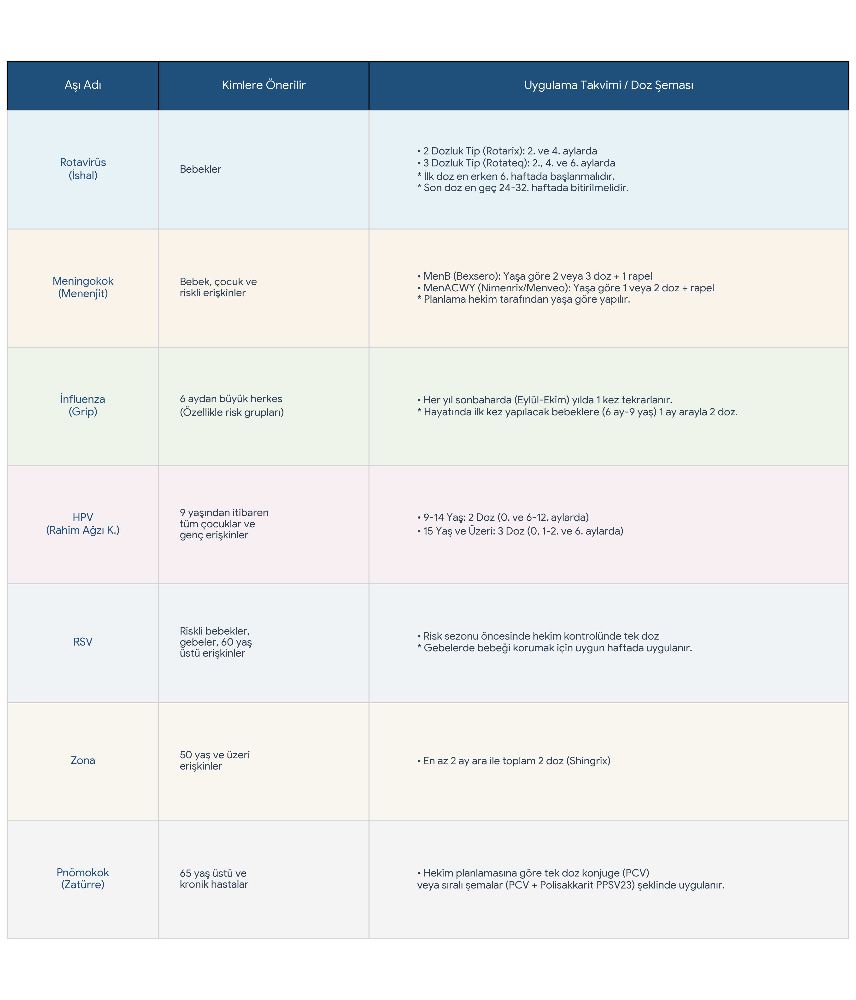

Aşılar Hakkında Merak Edilenler

Aşılar Nedir ve Nasıl Çalışır?
Sizleri aşılar ve aşı ile korunabilen hastalıklar ile ilgili bilgilendirmek istiyoruz. Bağışıklık sistemimiz bakterileri ve virüsleri yani mikropları, üzerlerindeki parçacıklarından, genetik malzemelerinden tanıyarak onların vücudumuza yabancı ve zararlı olduklarını anlar ve mücadele eder.
Aşılar da türüne göre zayıflatılmış canlı mikroplar, ölü mikroplar, mikroplara ait bazı parçaları ya da mikrobun yalnızca genetik materyallerini içerir. Bu materyaller vücuda verildiğinde bağışıklık sistemimiz uyarılır, bunların yabancı olduğunu algılar ve hafızasına atar. Çoğu zaman hem bağışıklığı sağlamak hem de bağışıklık sisteminin hafızasını oluşturmak için tek uygulama yetmez. Bu nedenle aşılar belirli aralıklarla tekrar uygulanır.
Tarihsel süreçte insanların ortalama ömrü uzadı. Ortaçağ’da ortalama insan ömrü 30-35 yıl iken günümüzde ortalama ömür 80’li yaşlara uzadı. Aşılardan önce en önemli ölüm nedeni bulaşıcı hastalıklardı. Ancak aşılama, hijyen koşullarının ve kanalizasyon sistemlerinin geliştirilmesi bu hastalıkların önlenmesinde ve insan ömrünün uzamasında başrol oynadı.

Soru: Neden aşı oluyoruz?
Aşılar her bulaşıcı hastalık için geliştirilmezler. En çok can kaybına yol açan, hızlı yayılabilen, en çok sakatlık ve ağır hastalıkla sonuçlanabilen hastalıklar için geliştirilir. Bazı aşılar hastalıktan tamamen korurken, bazı aşılar ise hastalığın kendisinden korumasa da hastalığın sakat bırakan ya da ölümcül yan etkilerinden ya da ağır türlerinden korurlar.
Soru: Aşı olmazsak ne olur?
Öncelikle ilk aşılardan sayılan Çiçek aşısının Osmanlı İmparatorluğu döneminde bu topraklarda üretildiğini belirtelim. Çiçek aşısı ilk kez Osmanlı’da uygulanıp Avrupa’ya geçmiştir. Aşılar, aşı olan kişiyi korudukları gibi toplumu da korurlar. Ancak aşının, toplumu koruyabilmesi için aşılama oranının %90 ve üzerinde olması gereklidir.

Soru: Aşılar toplumu nasıl korur? Sadece aşı olan kişi korunmaz mı?
Bir açık alan ve o açık alanda duran kalabalık bir insan grubunu düşünelim. O sırada yoğun bir yağmur başlamış olsun. O alandaki insanların çoğu şemsiyelerini açarsa sadece kendileri değil, çevrelerindeki insanlar da yağmurdan korunmuş olurlar. Ancak zaman geçtikçe şemsiye kullananlar şemsiyelerini kapatırsa sadece kendileri değil çevrelerindekiler de ıslanmaya yani hasta olmaya başlar. Bu nedenle aşılama oranlarının yüksek olması, toplumdaki insanların %90’ından fazlasının aşılanması hem kişileri hem de toplumu korur.
Soru: Başkalarının olduğu aşı beni ve çocuklarımı nasılsa koruyor. Ben neden aşı olayım o zaman?
Şemsiyeyi kendinizin taşıması sizi bu koruma kalkanının merkezinde tutar ve daha güçlü şekilde yağmurdan yani hastalıktan korunursunuz. Ayrıca toplumun yalnızca %10’dan fazlası bile sizin gibi düşündüğünde artık yağmurdan yani hastalıktan hiç korunamaz hale gelirsiniz.

Soru: Aşılarda neden koruyucu maddeler var?
Aşılar çeşitli koruyucular içerir. Bu koruyucular genelde aşının uygulanması, nakli gibi işlemler sırasında aşıya yabancı bir mikrop bulaşmasını önlemek içindir. Ancak bu koruyucuların dozu çok kısıtlıdır. Günlük yaşamda da bu koruyucu maddelere besin ya da su yoluyla da maruz kalabiliriz.
Soru: Aşılarda civa var mı?
Eskiden aşılar çoklu dozlarda üretilirken yani aşı açıldıktan sonra aynı flakondan çok sayıda aşı çekildiği için civa bileşikleri bulunmaktaymış. Ancak o dönemlerde bile bulunan civa bileşikleri kanda ve dokuda birikim yapmayan, vücuttan atılan türdenmiş. Günümüzde ise aşılar tek dozluk uygulandığından yani aşı olacak her kişi için tek flakon açıldığından aşılarda tiyomersal kullanma ihtiyacı kalmamıştır. Ülkemizde çoklu flakon olarak yapılan tek aşı verem aşısı olup verem aşısının yapısı nedeniyle zaten bu aşılar da civa içermez. Ayrıca günlük hayatta tükettiğimiz dip balıklarında bile daha yüksek miktarlarda ağır metal bulunur.

Soru: Aşılar kısırlaştırır mı?
Hayır. Aşılar kısırlığa neden olmaz. Kısırlığa neden olabilecek içeriğe sahip değildirler.
Soru: İlk çocuğuma aşı yaptırdım. Bir faydasını görmedim. Neden diğer çocuklarıma da yaptırayım?
Aşının faydası hastalığın hiç görülmemesi ya da hafif atlatılması olduğundan aşılar sessiz fayda sağlar. Dolayısıyla aşıların varlığı değil ama yokluğu hissedilir.
Soru: Aşılar ile insanlara çip takılıyormuş.
Hayır. İnsanlara çip takmak, düşüncelerini ve duygularını manipüle etmek için aşılar kullanılmaz. Eğer böyle bir çaba olsaydı insanları aşılamak gibi zor, maliyetli ve zahmetli bir yol kullanmak yerine günlük hayatta vazgeçilmez olan teknolojik aletler kullanılırdı.

Soru: Neden bu kadar farklı türde ve çok sayıda aşı var?
Bağışıklama en sık görülen, kişiye en çok zarar veren, en kolay yayılan hastalıklara yönelik yapılır. Bu hastalıklar zamanla ve toplumun bağışıklık kazanıp kazanılmamasına göre, hastalığın yok edilip edilmemesine göre değişir.
Örneğin çok önceleri yapılan çiçek aşısı artık hastalığın görülmemesi ile kullanılmamakta ama onun yerine başka aşılar eklenmiştir. Bağışıklama başarısı arttıkça hastalığın yok edilme ihtimali artar ve o hastalığın aşısı kullanılmayabilir. Hangi aşıların kimlere uygulanacağı T.C. Sağlık Bakanlığı’nın bilim kurulları tarafından belirlenmektedir.
Sağlık Bakanlığı Rutin Aşı Takvimi

Takvim Dışı (Özel) Aşılar

🛡️ Kişiye Özel Takvim Dışı Aşı Planlayıcı
Doğum Tarihi Bazlı Gelişmiş Algoritma
📅 Aşı Önerisi ve Takvimi
Tüm aşı kayıtlarınızı e-Nabız üzerinden veya Sağlık Bakanlığı'nın resmi Aşı Portalı üzerinden takip edebilirsiniz.
T.C. Sağlık Bakanlığı Aşı Portalı'na Git